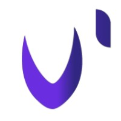

Vie associative, citoyenneté et centres d’intérêt.
IL
Trésorier
Association Innov’Lab
Octobre 2026 – octobre 2027
Association étudiante dédiée aux projets numériques et environementaux
Je fais partie de cette association depuis mon entrée à L'ESAIP en 2023. J'ai rejoins l'association en tant que membre actif puis en tant que vice-trésorier en 2025-2026.
Missions
Gestion du budget, rédaction de documents administratifs, gestion du compte bancaire de l'association. Projets de homelab, de sites web, projet de low-tech et projets étudiants.
Reprise et remises en état des projets de l'association : bornes d'arcades (reconfiguration, peinture et remontage) pour les mettre a disposition des étudiants.
Compétences développées
Suivi et gestion du projet, rigueur, travail en équipe.
Développement web et support utilisateur (FAQ, accompagnement des étudiants et professeurs)
Voir Innov'Lab sur LinkedIn
SNU
Service National Universel
Engagement citoyen
Juin – juillet 2020
Dispositif d’engagement citoyen proposé aux jeunes en France.
Missions
Cohésion de groupe, engagement civique et citoyenneté.
Compétences développées
Autonomie, travail en équipe.